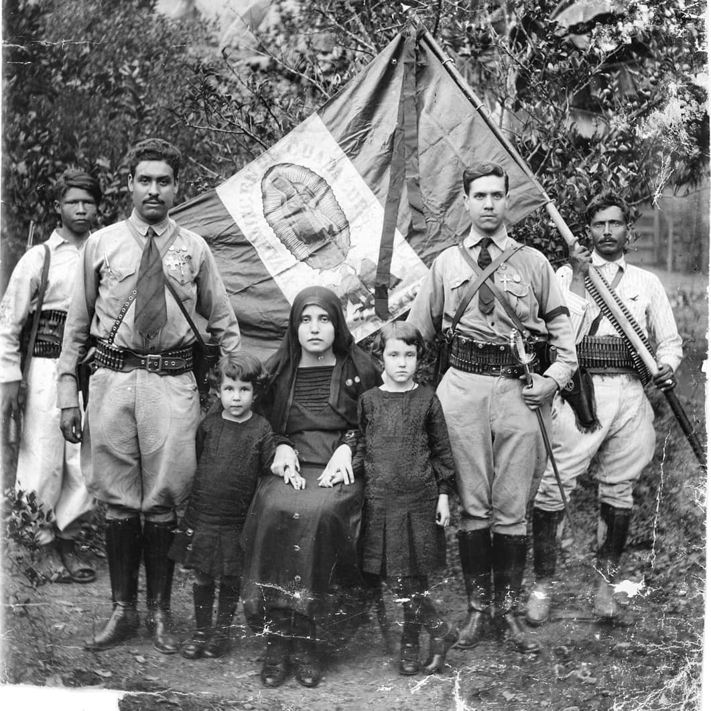

Guerra Cristera

La Guerra Cristera, también llamada Guerra de los Cristeros o Cristiada, fue una guerra civil en México que se prolongó durante tres
años, desde 1926 hasta 1929, entre el Gobierno y milicias de religiosos católicos que se resistían a la aplicación de la llamada Ley
Calles, la cual proponía limitar y controlar el culto católico en la nación, el cual proliferaba en la nación mexicana.
La Constitución mexicana de 1917 establecía una política que negaba la personalidad jurídica a las iglesias, prohibía la participación del clero en
política, privaba a las iglesias a poseer bienes raíces e impedía el culto público fuera de los templos. Algunas estimaciones ubican el número
de personas muertas en un máximo de 250 mil,8 entre civiles, efectivos de las fuerzas cristeras y del Ejército Mexicano.10
Entre 1934 y 1936 a 1938 se produjo un reavivamiento del conflicto, llamado Segunda Guerra Cristera o la Segunda
Antecedentes de la Guerra / Rebelión Cristera
Con el ocaso del Porfiriato, en la primera década del siglo XX, emergieron nuevamente tendencias anticlericales que se expresaron durante la
Revolución mediante actos de violencia y una legislación restrictiva, fijada en la Constitución de 1917.13 El día 14 de noviembre de 1921, ocurrió
un atentado en la Antigua Basílica de Guadalupe, con la finalidad de destruir la imagen de la Virgen de Guadalupe, sin embargo por causas aún
desconocidas, el cuadro no sufrió daño alguno, por lo que muchos indicaron que fue un milagro; esto causó enojo en la feligresía mexicana y dio
una razón para levantarse en armas. Después de un período poco tranquilo durante los gobiernos de Carranza y Obregón, la presión anticlerical se
intensificó con la elección de Plutarco Elías Calles a la presidencia. En 1925, con apoyo de la Confederación Regional Obrera Mexicana (CROM)
se creó la Iglesia Católica Apostólica Mexicana (ICAM) para romper con el Vaticano.14
⬇️